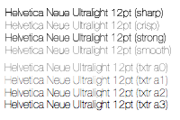
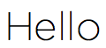
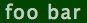
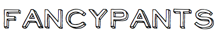

by Thomas Fuchs
by Thomas FuchsThe biggest advantage over other web font rendering techniques is full support of OS X's advanced subpixel antialiasing.
You can see this in action in the zoomed-in "textorize" headline at the top of this page. In essence, the apparent resolution of the screen is tripled (see the presentation below for more info).
Find out more at the textorize article at Thomas' blog.
If you've installed Gemcutter, it's as simple as:
$ gem install textorizeIf you prefer pulling the latest version from Github, install via:
$ gem sources -a http://gems.github.com $ sudo gem install madrobby-textorizeThis will install the textorize Ruby Gem, and the
textorize command line tool.
If you’re not using the default ruby environment on OS X, you’ll need to install RubyCocoa.
You can download this project in either zip or tar formats.
You can also clone the project with Git by running:
$ git clone git://github.com/madrobby/textorize
For the latest updates and neat tricks follow @textorize on Twitter.
textorize [options] string
-f, --font=[FONT] Font name
-s, --size=[SIZE] Font size in point
-l, --lineheight=[HEIGHT] Line height in point
-t, --ligatures=[TYPE] Ligatures usage: all, standard or off
--list-fonts List available fonts
-k, --kerning=[VALUE] Kerning adjustment
-o, --output=[FILENAME] Specify filename for saving
-b, --obliqueness=[ANGLE] Slant angle
-c, --color=[COLOR] Render text in specific color (CSS color value)
-g, --background=[COLOR] Render background in specific color (CSS color value)
-a, --smoothing=[VALUE] Font smoothing: 0=no subpixel AA, 1=light, 2=normal, 3=strong
-h, --help Display this message and exit
The color parameters take any CSS color, in #abc,
#aabbcc, rgb(1,2,3) or rgba(1,2,3,0.5) format.
These options are great for optimizing the appearance of light fonts at small fonts sizes.
Here's an example comparing the rendering of Helvetica Neue Ulitralight at 12pt, with
the various Photoshop and textorize smoothing options.

-a0 (or --smoothing=0) turns of subpixel antialiasing.
-a1 (or --smoothing=1) turns on light subpixel antialiasing. This mode makes glyphs rendered thinner, and is a bit more akin to Cleartype on Windows than the default OS X font rendering.
-a2 (or --smoothing=2) turns on medium/normal subpixel antialiasing. This is the default OS X font smoothing.
-a3 (or --smoothing=3) turns on strong subpixel antialiasing.
Generate a output.png file of the string "Hello" in black on white 200pt Gotham.
textorize -f"Gotham" -s200 Hello
Generate a foo.png file of the string "foo bar" in 19pt Lucida Grande, 75% opacity white on a dark green background, with additional spacing between glyphs:
textorize -fLucida\ Grande -s19 -k1.5 -ofoo.png --color=rgba\(255,255,255,0.75\) --background=#003800 foo\ bar
Generate a fancy.png file of the string "fancypants" in 60pt NeoRetro:
textorize -fNeoRetro -s60 -ofancy.png fancypants
Generate a transparent.png file of the string "transparent" in white on a transparent background in 50pt ProFont (not that the transparent background forces normal, non-subpixel antialiasing):
textorize -fProFont -cwhite -gtransparent -s50 -otransparent.png transparent
I recommend using the smusher command line tool to losslessly shrink the resulting PNG images.